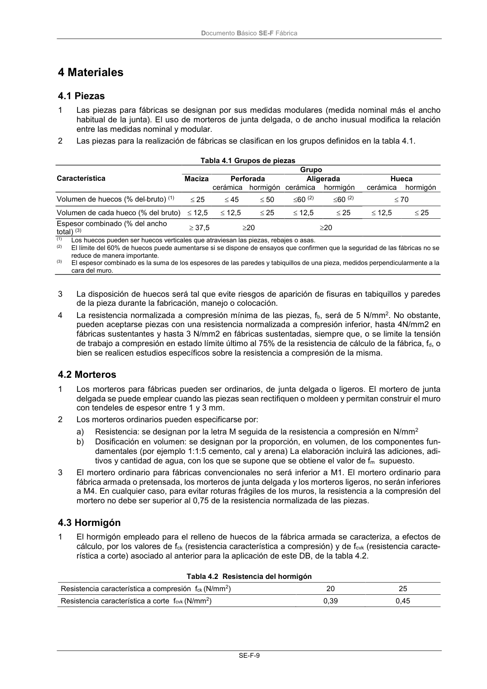

DB-SE-F · 4 Materiales · 4.1 Piezas · 4.2 Morteros · 4.3 Hormigón · versión 2019-12-20
SHA256: e3e0805c3b4c307519c26dc34c3fdbf143d842edd013c91b0f52d2c73403d91c · página física 13 de 70 · métodos de encabezado
solo si están cotejados.
Formatos: Markdown · JSON de bloques · PDF p. 13 · imagen PNG
Documento Básico SE-F Fábrica SE-F-9 4 Materiales 4.1 Piezas 1 Las piezas para fábricas se designan por sus medidas modulares (medida nominal más el ancho habitual de la junta). El uso de morteros de junta delgada, o de ancho inusual modifica la relación entre las medidas nominal y modular. 2 Las piezas para la realización de fábricas se clasifican en los grupos definidos en la tabla 4.1. Tabla 4.1 Grupos de piezas Característica Grupo Maciza Perforada Aligerada Hueca cerámica hormigón cerámica hormigón cerámica hormigón Volumen de huecos (% del bruto) (1) 25 45 50 60 (2) 60 (2) 70 Volumen de cada hueco (% del bruto) 12,5 12,5 25 12,5 25 12,5 25 Espesor combinado (% del ancho total) (3) 37,5 20 20 (1) Los huecos pueden ser huecos verticales que atraviesan las piezas, rebajes o asas. (2) El límite del 60% de huecos puede aumentarse si se dispone de ensayos que confirmen que la seguridad de las fábricas no se reduce de manera importante. (3) El espesor combinado es la suma de los espesores de las paredes y tabiquillos de una pieza, medidos perpendicularmente a la cara del muro. 3 La disposición de huecos será tal que evite riesgos de aparición de fisuras en tabiquillos y paredes de la pieza durante la fabricación, manejo o colocación. 4 La resistencia normalizada a compresión mínima de las piezas, fb, será de 5 N/mm2. No obstante, pueden aceptarse piezas con una resistencia normalizada a compresión inferior, hasta 4N/mm2 en fábricas sustentantes y hasta 3 N/mm2 en fábricas sustentadas, siempre que, o se limite la tensión de trabajo a compresión en estado límite último al 75% de la resistencia de cálculo de la fábrica, fd, o bien se realicen estudios específicos sobre la resistencia a compresión de la misma. 4.2 Morteros 1 Los morteros para fábricas pueden ser ordinarios, de junta delgada o ligeros. El mortero de junta delgada se puede emplear cuando las piezas sean rectifiquen o moldeen y permitan construir el muro con tendeles de espesor entre 1 y 3 mm. 2 Los morteros ordinarios pueden especificarse por: a) Resistencia: se designan por la letra M seguida de la resistencia a compresión en N/mm2 b) Dosificación en volumen: se designan por la proporción, en volumen, de los componentes fun- damentales (por ejemplo 1:1:5 cemento, cal y arena) La elaboración incluirá las adiciones, adi- tivos y cantidad de agua, con los que se supone que se obtiene el valor de fm supuesto. 3 El mortero ordinario para fábricas convencionales no será inferior a M1. El mortero ordinario para fábrica armada o pretensada, los morteros de junta delgada y los morteros ligeros, no serán inferiores a M4. En cualquier caso, para evitar roturas frágiles de los muros, la resistencia a la compresión del mortero no debe ser superior al 0,75 de la resistencia normalizada de las piezas. 4.3 Hormigón 1 El hormigón empleado para el relleno de huecos de la fábrica armada se caracteriza, a efectos de cálculo, por los valores de fck (resistencia característica a compresión) y de fcvk (resistencia caracte- rística a corte) asociado al anterior para la aplicación de este DB, de la tabla 4.2. Tabla 4.2 Resistencia del hormigón Resistencia característica a compresión fck (N/mm2) 20 25 Resistencia característica a corte fcvk (N/mm2) 0,39 0,45
